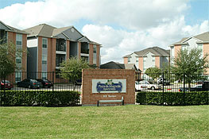

Plaza De Magnolia
Affordable housing in Houston’s East End.
- Homes
- 84
- First occupancy
- 1996
AAMA-CDC developed Plaza De Magnolia in 1995, with occupancy beginning in 1996. The project used Low-Income Housing Tax Credits to provide homes for lower-income families.
The original project was designed for families whose incomes did not exceed 60% of the Houston area median income. AAMA-CDC structured the development as managing partner, with the National Equity Fund and other tax-credit investors as limited partners.
A neighborhood gathering place
Plaza De Magnolia also hosted community events, including National Night Out in August 2004.
Location
7310 Sherman & 74th Street
Houston, Texas 77011
Project history from AAMA-CDC’s original site. For current information, please contact Peter Clementi.

Good communities start with a conversation.
Connect with Peter Clementi about AAMA-CDC, our development work, or opportunities to work together.